set.seed(20260928)
n <- 3000
d <- data.frame(
age = round(runif(n, 30, 85)), # 混杂 + 预后
marker = round(rnorm(n), 2), # 效应修饰（连续）
sex = factor(sample(c("F", "M"), n, replace = TRUE)), # 效应修饰（二分类）
stage = factor(sample(c("I", "II", "III"), n, replace = TRUE,
prob = c(0.40, 0.35, 0.25))), # 混杂 + 预后
noise = round(rnorm(n), 2) # 纯噪声
)
# 治疗分配依赖年龄与分期：观察性数据，有混杂
d$z <- rbinom(n, 1, plogis(-0.2 + 0.03 * (d$age - 60) + 0.5 * (d$stage == "III")))
# 基线风险（每月）与治疗的对数风险比
lam0 <- 0.006 * exp(0.03 * (d$age - 60) + 0.4 * (d$stage == "II") +
0.9 * (d$stage == "III"))
lhr <- -0.1 - 0.5 * d$marker - 0.6 * (d$sex == "M")
# 真实 CATE：60 个月生存概率之差 S1(60 | x) - S0(60 | x)
d$tau_true <- exp(-lam0 * exp(lhr) * 60) - exp(-lam0 * 60)
ev <- rexp(n, lam0 * exp(lhr * d$z))
cens <- pmin(rexp(n, 0.004), runif(n, 60, 150)) # 失访 + 行政删失
d$time <- round(pmin(ev, cens), 1)
d$DSS <- as.integer(ev <= cens)
c(event_rate = mean(d$DSS), true_ATE = mean(d$tau_true))
#> event_rate true_ATE
#> 0.4356667 0.08197501. 异质性治疗效应：get_hte() 与 plt_hte_*()
causalR 包函数手册
causalR 里估计异质性治疗效应（heterogeneous treatment effect, HTE）的是一组 五个函数：get_hte() 用 grf 拟合一次因果森林， 把平均效应、亚组效应、逐人 CATE、双稳健得分和森林本身装进一个 hte_res 对象； 四个 plt_hte_*() 只读这个对象，从四个角度回答同一个问题—— 治疗效应在谁身上不一样。
data ──get_hte()──► hte_res ─┬─ plt_hte_dep() 效应随单个协变量怎么变
├─ plt_hte_sub() 事先划定的亚组各自效应多大
├─ plt_hte_cate() 森林把效应分到每个人身上是什么形状
└─ plt_hte_rate() 按某个规则挑人，能否挑出获益更多的人| 函数 | 画什么 | 有没有置信区间 | 是否重拟合森林 |
|---|---|---|---|
get_hte() |
不画图；ATE、亚组效应、p_het、校准检验 |
有 | 拟合一次 |
plt_hte_dep() |
每个协变量一个面板：逐人 CATE、DR 曲线、部分依赖 | 只有红色 DR 层有 | 否 |
plt_hte_sub() |
亚组森林图 | 有 | 否 |
plt_hte_cate() |
逐人 CATE 的瀑布图 / 密度图 | 可选（grf 逐点区间） | 否 |
plt_hte_rate() |
TOC / Qini 曲线、GATES 分组效应 | 有 | 排序规则含 "cate" 时重拟合两片 |
全部图形函数都返回 ggplot（多面板时是 patchwork），都以 save = list() 作最后一个参数， 非空时交给 RegR::save_plt() 写 PDF。
安装与核对环境
remotes::install_github("HUI950319/causalR")
# 森林与绘图依赖都在 Suggests 里，需要单独装
install.packages(c("grf", "patchwork", "sandwich", "forestplot", "ggplotify"))
# 可选：画变量重要性
remotes::install_github("HUI950319/MLR")grf 是 get_hte() 的唯一后端；sandwich 给连续协变量的样条检验算 HC3 标准误； forestplot + ggplotify 画并包装亚组森林图；patchwork 拼多面板图； MLR 的 plt_bar_per() 画变量重要性（不是 causalR 的依赖）。
本页核对于 2026 年 9 月 28 日，代码块由本站渲染时真实执行， 页面上的输出与图形就是本机结果：
| 项目 | 值 |
|---|---|
| causalR | 0.0.0.9000（GitHub main，提交 1411dbe） |
| grf | 2.6.1 |
| MLR | 0.1.13（仅 plt_bar_per()） |
| R | Windows 4.4.3 |
示例数据：真值已知的生存数据
全页共用一份模拟队列。事件时间服从指数分布，治疗的对数风险比随 marker 和 sex 变化；因为 DGP 写死，每个人的真实 CATE 可以直接算出来， 后面每一步都能拿估计值和真值对照。
get_hte() 的生存结局固定读 time（随访时间）和 DSS（事件 0/1）两列， 与 RegR::get_eff() 一致，所以模拟数据直接用这两个列名。
真值里有一个值得先看清的地方：stage 没有进入对数风险比， 但在”生存概率之差”这个尺度上它仍然是效应修饰变量—— 分期越晚基线风险越高，同样的风险比换算成的绝对获益就越大：
tapply(d$tau_true, d$sex, mean)
#> F M
#> 0.01594081 0.14970353
tapply(d$tau_true, d$stage, mean)
#> I II III
#> 0.06127591 0.08863898 0.10539686效应修饰是相对于效应尺度而言的，这是后面读 p_het 时要记住的第一件事， 详见效应修饰的效应尺度。
get_hte()：拟合森林
res <- get_hte(
d, cat_var = "z",
adj_var = c("age", "marker", "sex", "stage", "noise"),
sub_var = c("sex", "stage"),
surv = TRUE, time = 60,
measure = c("diff", "ratio"),
grf_args = list(num.trees = 1000, seed = 1)
)
res
#> <hte_res> causal_survival_forest (grf 2.6.1), n = 3000 (treated = 1420), conf_level = 0.95
#> cat_var = z (treated: 1), outcome = time / DSS, target = survival.probability at time = 60
#> propensity range 0.248 to 0.733
#>
#> # A tibble: 2 × 10
#> method estimand measure estimate std.error conf.low conf.high p.value n
#> <chr> <chr> <chr> <dbl> <dbl> <dbl> <dbl> <dbl> <int>
#> 1 grf ATE diff 0.0843 0.0185 0.0481 0.120 0.00000502 3000
#> 2 grf ATE ratio 0.797 0.0503 0.722 0.880 0.00000675 3000
#> # ℹ 1 more variable: n_treat <int>
#>
#> Subgroups:
#> # A tibble: 10 × 13
#> sub_var level estimand measure n n_treat estimate std.error conf.low
#> <chr> <chr> <chr> <chr> <int> <int> <dbl> <dbl> <dbl>
#> 1 sex F ATE diff 1519 703 0.0634 0.0266 0.0113
#> 2 sex F ATE ratio 1519 703 0.855 0.0662 0.751
#> 3 sex M ATE diff 1481 717 0.106 0.0256 0.0554
#> 4 sex M ATE ratio 1481 717 0.731 0.0776 0.628
#> 5 stage I ATE diff 1193 544 0.0625 0.0280 0.00759
#> 6 stage I ATE ratio 1193 544 0.806 0.0977 0.666
#> 7 stage II ATE diff 1052 461 0.0978 0.0315 0.0361
#> 8 stage II ATE ratio 1052 461 0.761 0.0892 0.639
#> 9 stage III ATE diff 755 415 0.0998 0.0388 0.0239
#> 10 stage III ATE ratio 755 415 0.825 0.0756 0.712
#> # ℹ 4 more variables: conf.high <dbl>, p.value <dbl>, cate_mean <dbl>,
#> # p_inter <dbl>
#>
#> Calibration (one-sided p):
#> # A tibble: 2 × 5
#> term estimate std.error statistic p.value
#> <chr> <dbl> <dbl> <dbl> <dbl>
#> 1 mean.forest.prediction 1.01 0.218 4.65 1.71e- 6
#> 2 differential.forest.prediction 0.996 0.152 6.54 3.65e-11
#>
#> # ratio / OR compare the event risk 1 - S(t); diff is S1(t) - S0(t).
#> # $data: .cate = out-of-bag CATE, .dr_score = AIPW score (diff scale).
#> # $importance: grf split frequency by covariate (not a test) + p_het; plt_bar_per()-ready.
#> # Calibration: 1 = well calibrated; differential.forest.prediction > 0 = heterogeneity.
#> # plt_hte_dep(x) draws the CATE against each covariate.打印分四段：森林类型与倾向得分范围、$stats（总体效应）、$subgroup（亚组效应）、 $calibration（校准检验），末尾几行注释提示各列的尺度。
参数
| 参数 | 默认 | 说明 |
|---|---|---|
data |
— | 数据框 |
cat_var |
— | 一个二分类暴露列：0/1、逻辑型，或两水平因子 / 字符（第二个水平是治疗组） |
sub_var |
NULL |
分类亚组列。数值列超过 5 个不同取值会被拒绝，先切组；不在 adj_var 里的列会自动加进森林协变量并提示 |
adj_var |
NULL |
森林条件化的协变量。缺失值保留给 grf（它能按缺失分裂）；日期列要先转成数值 |
surv |
TRUE |
TRUE：读 time + DSS，用 causal_survival_forest()；一个列名：二分类或连续结局，用 causal_forest()；FALSE（竞争风险）不支持 |
method |
"grf" |
目前只有 grf 后端 |
factor_encoding |
"onehot" |
分类协变量进森林的方式："onehot" 每个水平一列；"integer" 按水平顺序编成 1…K，适合分期这类有序因子 |
estimand |
"ATE" |
可多选 "ATE" / "ATT" / "ATC" / "ATO"；生存结局只支持 ATE |
measure |
"diff" |
可多选 "diff" / "ratio" / "OR"；相对尺度只算 ATE |
conf_level |
0.95 |
Wald 区间的置信水平 |
time |
120 |
生存结局的时间点 \(t\)（grf 的 horizon），它定义了估计量，换时间点要重跑 |
grf_args |
list() |
原样传给 grf 的参数，如 num.trees、seed、tune.parameters、已知倾向 W.hat；生存结局的 target 默认 "survival.probability"，可改 "RMST" |
verbose |
FALSE |
TRUE 时报告因暴露或结局缺失删掉了多少行 |
效应尺度
每种尺度比较的都是两臂的平均结局：
| 结局 | "diff" |
"ratio" |
"OR" |
|---|---|---|---|
| 连续 | 均值差 | 均值比（两臂均值须为正） | — |
| 二分类 | 风险差 | 风险比 | 比值比 |
生存，target = "survival.probability" |
\(S_1(t) - S_0(t)\) | 事件风险比 \(\{1 - S_1(t)\}/\{1 - S_0(t)\}\) | \(t\) 前发生事件的比值比 |
生存，target = "RMST" |
RMST 差 | RMST 比 | — |
"diff" 就是 grf::average_treatment_effect() 本身；"ratio" / "OR" 由森林反推出的 两臂 AIPW 得分构造，区间和 p 值在对数尺度上用影响函数（delta 法）做 Wald 检验。 生存概率的相对尺度比较的是事件风险 \(1 - S(t)\)，小于 1 表示治疗有利， 读法与风险比相同；而 "diff" 仍是生存概率之差，大于 0 表示治疗有利。 风险比（HR）本身不提供：因果森林估计的是平均结局的对比，HR 不是这种对比。
DSS = 0 一律按删失处理，其它原因死亡也包括在内，所以这里的 \(S(t)\) 是净生存 （在其它死因与疾病死亡条件独立的假设下），不是 1 减累积发生率。
返回对象
hte_res 是一个列表：
| 元素 | 内容 |
|---|---|
$stats |
每个估计量 × 尺度一行：estimate、std.error、conf.low、conf.high、p.value、n、n_treat |
$subgroup |
每个 sub_var 水平 × 估计量 × 尺度一行；estimate 是亚组内的双稳健效应，cate_mean 是森林 CATE 的组内均值（只作描述），p_inter 检验同一变量各水平效应相等 |
$importance |
每个协变量一行：importance（grf 分裂频率，按原变量加总）、n_col、df、p_het |
$calibration |
grf 校准检验的两个系数 |
$data |
分析用的行，外加 .cate（袋外 CATE）与 .dr_score（AIPW 得分），两者都在 "diff" 尺度 |
$fit |
grf 森林对象 |
attr(, "analysis") |
实际用到的协变量、治疗水平、倾向得分范围、森林种子与 grf_args 等元数据 |
res$stats
#> # A tibble: 2 × 10
#> method estimand measure estimate std.error conf.low conf.high p.value n
#> <chr> <chr> <chr> <dbl> <dbl> <dbl> <dbl> <dbl> <int>
#> 1 grf ATE diff 0.0843 0.0185 0.0481 0.120 0.00000502 3000
#> 2 grf ATE ratio 0.797 0.0503 0.722 0.880 0.00000675 3000
#> # ℹ 1 more variable: n_treat <int>
head(res$data[, c("age", "marker", "sex", "z", "time", "DSS", ".cate", ".dr_score")])
#> age marker sex z time DSS .cate .dr_score
#> 1 41 0.46 F 0 50.7 1 0.14971338 1.5498096
#> 2 63 0.07 M 0 35.5 1 0.09204135 1.7351556
#> 3 32 -0.46 M 0 26.0 1 0.03977986 1.1683400
#> 4 35 1.11 M 0 71.0 0 0.21681309 -0.2330756
#> 5 54 1.45 F 1 105.7 0 0.30895667 0.6825740
#> 6 42 0.32 M 0 102.6 0 0.15722277 -0.3448882
names(attr(res, "analysis"))
#> [1] "method" "backend" "backend_version" "forest"
#> [5] "outcome_type" "cat_var" "treated" "surv"
#> [9] "outcome" "sub_var" "adj_var" "covariates"
#> [13] "factor_encoding" "estimand" "measure" "target"
#> [17] "time" "conf_level" "n" "n_treat"
#> [21] "ps_range" "seed" "grf_args" "call"与真值对照
总体效应的估计值是 0.084 （95% CI 0.048 至 0.120）， 真值 0.082。逐人 CATE 与真值的相关系数是 0.75。 亚组逐行对照：
sub <- res$subgroup[res$subgroup$measure == "diff",
c("sub_var", "level", "estimate", "conf.low", "conf.high",
"cate_mean", "p_inter")]
sub$truth <- c(tapply(res$data$tau_true, res$data$sex, mean),
tapply(res$data$tau_true, res$data$stage, mean))
sub
#> # A tibble: 5 × 8
#> sub_var level estimate conf.low conf.high cate_mean p_inter truth
#> <chr> <chr> <dbl> <dbl> <dbl> <dbl> <dbl> <dbl>
#> 1 sex F 0.0634 0.0113 0.116 0.0778 0.253 0.0159
#> 2 sex M 0.106 0.0554 0.156 0.0892 0.253 0.150
#> 3 stage I 0.0625 0.00759 0.117 0.0780 0.624 0.0613
#> 4 stage II 0.0978 0.0361 0.159 0.0897 0.624 0.0886
#> 5 stage III 0.0998 0.0239 0.176 0.0832 0.624 0.105这张表同时说明了三件事：
- 亚组主估计用
estimate，不用cate_mean。 森林估计会被压向总体均值： 两性的cate_mean只差 0.011， 双稳健estimate差 0.042，真值差 0.134。 所以cate_mean只给点值、不给区间。 - 真修饰变量也可能不显著。
sex是写进 DGP 的修饰变量， 但本例p_inter= 0.253：3000 例、约 44% 事件率的生存数据里，二分类修饰变量的交互检验效能本来就有限。 “不显著”不等于”没有修饰”。 - 尺度依赖的修饰也能被估出来。
stage三个水平的双稳健估计沿着真值的方向递增。
变量重要性与 p_het
res$importance
#> # A tibble: 5 × 5
#> variable importance n_col df p_het
#> <chr> <dbl> <int> <int> <dbl>
#> 1 marker 0.700 1 2 1.05e-11
#> 2 noise 0.140 1 2 7.43e- 1
#> 3 age 0.101 1 2 9.38e- 1
#> 4 stage 0.0364 3 2 6.24e- 1
#> 5 sex 0.0234 2 1 2.53e- 1importance 是 grf 的深度加权分裂频率，不是检验：连续变量、取值多的变量、 被 one-hot 拆成多列的因子天然得分更高。本例纯噪声 noise 的重要性排在第二， 但它的 p_het 远不显著。要判断”这个变量是否修饰效应”，看的是 p_het：
- 分类变量：各水平双稳健均值相等的 Wald 检验（
df= 水平数 − 1）， 对 ATE 差值与$subgroup的p_inter逐位相同； - 连续变量（超过 5 个不同取值）：AIPW 得分对自然样条
ns(x, 2)回归、 HC3 标准误下样条项的联合 Wald 检验。
p_het 是逐变量、未校正的单变量投影检验，只在 ATE 差值尺度上做。 一次筛多个变量时要事先定好检验族并做多重校正，例如 p.adjust(res$importance$p_het, method = "BH")；显著也不代表该变量独立于 与它相关的其它协变量起作用。
用 plt_bar_per() 画变量重要性
res$importance 的前两列（variable、importance）正是 MLR::plt_bar_per() 读的格式： 它自动取第一个文本列作变量名、第一个数值列作数值，不需要任何转换。 importance 在所有协变量上加总为 1，所以 mode = "bar_per2" 外圈的百分比就是 各变量占森林全部分裂的份额：
MLR::plt_bar_per(res$importance, mode = "bar_per2",
add_name = c(marker = "Biomarker", noise = "Noise"),
labs_args = list(x = "grf variable importance", y = NULL))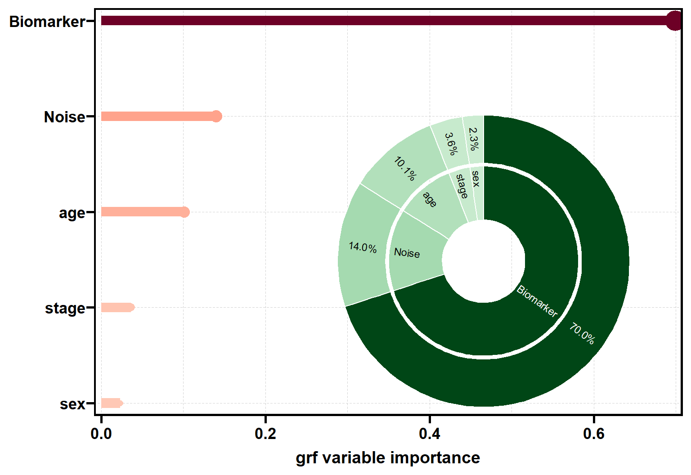
add_name 按”旧名 = 新名”改标签，并优先于函数总会套用的 SEER 变量字典； mode 还可以是 "bar"（只要棒棒糖图）、"per" / "per2"（只要环图）或默认的 "bar_per"。 这张图画的仍然是分裂频率：噪声变量照样排第二，判断效应修饰要回到上表的 p_het。 plt_bar_per() 不读 p_het 列。
校准检验
res$calibration
#> # A tibble: 2 × 5
#> term estimate std.error statistic p.value
#> <chr> <dbl> <dbl> <dbl> <dbl>
#> 1 mean.forest.prediction 1.01 0.218 4.65 1.71e- 6
#> 2 differential.forest.prediction 0.996 0.152 6.54 3.65e-11这是 grf::test_calibration() 的回归：mean.forest.prediction 系数为 1 表示平均 CATE 估得准；differential.forest.prediction 系数为 1 表示 CATE 围绕均值的离散程度校准良好， 显著大于 0 则是”效应确实在变”的整体检验（p 值单侧）。grf 只对 causal_forest 提供 这个检验；get_hte() 对生存森林用同一回归，只把因变量换成生存森林保存的 删失校正残差。
differential.forest.prediction 为负数时读作”未检出异质性”，不要取绝对值： 森林与回归用的是同一批患者，无异质性的数据里这个系数本来就常为负， 取绝对值会让假阳性率远超名义水平。
其它结局
surv 换成一个列名就是二分类或连续结局，改用 causal_forest()：
d$resp <- rbinom(n, 1, plogis(-1 + 0.03 * (d$age - 60) +
d$z * (0.2 + 0.8 * d$marker)))
res_bin <- get_hte(d, cat_var = "z",
adj_var = c("age", "marker", "sex", "stage", "noise"),
surv = "resp", measure = c("diff", "ratio", "OR"),
grf_args = list(num.trees = 1000, seed = 1))
res_bin$stats
#> # A tibble: 3 × 10
#> method estimand measure estimate std.error conf.low conf.high p.value n
#> <chr> <chr> <chr> <dbl> <dbl> <dbl> <dbl> <dbl> <int>
#> 1 grf ATE diff 0.0383 0.0168 0.00538 0.0712 0.0226 3000
#> 2 grf ATE ratio 1.14 0.0565 1.02 1.27 0.0228 3000
#> 3 grf ATE OR 1.20 0.0804 1.03 1.41 0.0227 3000
#> # ℹ 1 more variable: n_treat <int>几道护栏
time 超出随访时，grf 自己会静默给出接近 0 的效应。get_hte() 在任一臂没有人 随访超过 time 时直接报错，少于 10 人时警告：
get_hte(d, cat_var = "z", adj_var = c("age", "marker", "sex", "stage", "noise"),
time = 160, grf_args = list(num.trees = 200, seed = 1))
#> Error:
#> ! No patient with `z` = 1 is followed beyond `time` = 160 (longest follow-up 149.8), so the effect at that time is not identified; choose a smaller `time`.其余几条行为写在帮助页里，这里只列要点：
- 大样本自动减树。 分析行数超过 1 万且
grf_args没写num.trees时， 自动改用 200 棵树并提示：10 万例生存数据从 83 秒降到 13 秒，ATE 基本不变， 逐人 CATE 噪声更大。连续时间、取值极多的生存数据，限制内存的是grf_args$failure.times的粗网格（例如按月0:120），不是树的数量。 - 倾向得分恰为 0 或 1 时 AIPW 得分无定义，调用停止（只要求 ATO 差值时除外）；落在 0.05 / 0.95 之外时合并成 一条警告，范围记在
attr(res, "analysis")$ps_range。 - 缺失值：只按暴露和结局删行；协变量缺失交给 grf。每个亚组行、
p_het与plt_hte_dep()的面板只用该变量有观测值的患者。 - 相对尺度（
"ratio"/"OR"）不支持带sample.weights或clusters的森林。
plt_hte_dep()：效应随协变量怎么变
默认对每个协变量画一个面板，按 $importance 排序，图层是灰色的逐人 CATE 和 红色的双稳健估计，面板标题带 p_het：
plt_hte_dep(res)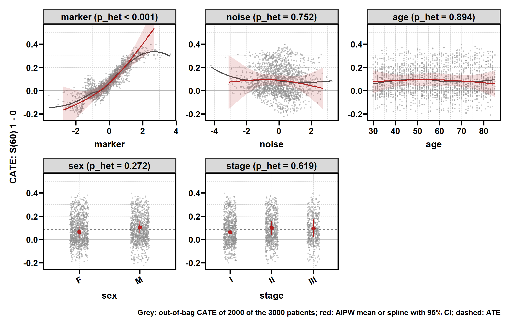
三种视图
display 选择图层，三层回答的是不同的问题：
| 图层 | 颜色 | 是什么 | 置信区间 |
|---|---|---|---|
"cate" |
灰 | 每个人的袋外 CATE；连续变量加一条 loess 线（跨度 cate_smooth） |
无，只作描述 |
"dr" |
红 | 该协变量取某值的患者中的平均效应：分类变量是各水平 AIPW 均值，连续变量是 AIPW 得分的自然样条 | 有（逐点，HC3） |
"pdp" |
蓝 | 森林的部分依赖：只改这个协变量、其它协变量保持观测分布时森林学到的形状 | 无 |
下面把三层叠在 marker 上，并额外加一条绿色的真值曲线（真实 CATE 对 marker 的 loess 平滑，这一层是本页为了对照加的，不是函数输出）：
library(ggplot2)
plt_hte_dep(res, x_var = "marker", display = c("cate", "dr", "pdp")) +
geom_smooth(aes(marker, tau_true), data = res$data, method = "loess",
formula = y ~ x, se = FALSE, colour = "#1b7837", linewidth = 0.8,
inherit.aes = FALSE)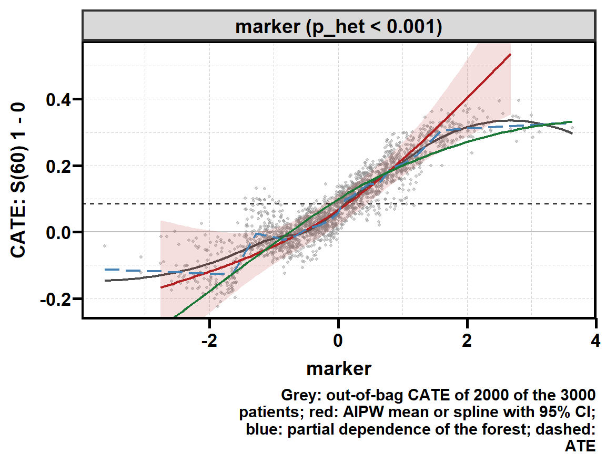
几条线在数据密集的中段基本重合；两端数据稀少，就分开了：marker 很高时 真值因为生存概率有上界而变平，默认 spline_df = 2 的红色样条接近直线、继续上扬， 区间也随之变宽。当协变量彼此相关时，三层也可能分开： "dr" 平均的是”该值患者身上实际出现的其它协变量”，"pdp" 固定其它协变量的整体分布。
双变量热图
type = "heat" 需要恰好两个变量，画森林的二维部分依赖：
plt_hte_dep(res, x_var = c("marker", "sex"), type = "heat")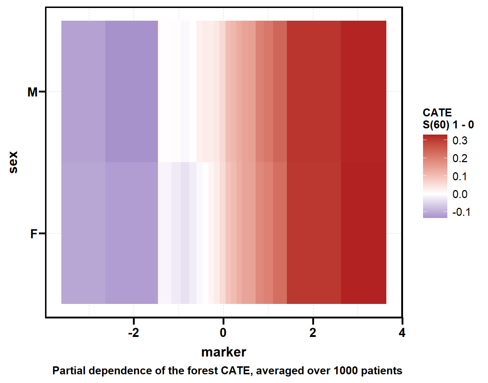
参数
| 参数 | 默认 | 说明 |
|---|---|---|
x |
— | get_hte() 返回的 hte_res |
x_var |
NULL |
NULL 为全部协变量（按重要性排序）；变量名向量；或 "fct" / "num" 只画分类 / 连续变量 |
type |
"dep" |
"dep" 每变量一面板；"heat" 双变量热图 |
display |
c("cate", "dr") |
图层，可加 "pdp" |
conf_level |
0.95 |
红色层的置信水平 |
ylim |
NULL |
统一的 y 范围，超出的区间被截断 |
cate_smooth |
0.6 |
灰色 loess 线的跨度，0.05–1；0 只画点不画线 |
dr_args |
list(spline_df = 2) |
连续变量样条的自由度；取默认值时面板上的 p_het 与 $importance 相同 |
pdp_args |
list(grid_n = 21, max_n = 1000) |
部分依赖的网格点数与参与平均的最多患者数（等距抽取，不依赖随机种子） |
axis_arg |
list(share_y = "all") |
"all" 所有面板共用 y 轴；"none" 各自定范围 |
title、save |
NULL、list() |
标题；PDF 输出 |
不设 ylim 时，y 轴只按点和估计值定范围、不按区间定，否则一个样本很少的水平 就能把所有面板压扁。灰点每面板最多画 2000 个，loess 线和 y 范围仍用全部患者。
plt_hte_sub()：亚组森林图
从存下来的森林重新计算每个水平内的双稳健 ATE，不重拟合； 与 get_hte(sub_var = ) 的数值逐位相同。默认取森林里的全部分类协变量：
plt_hte_sub(res)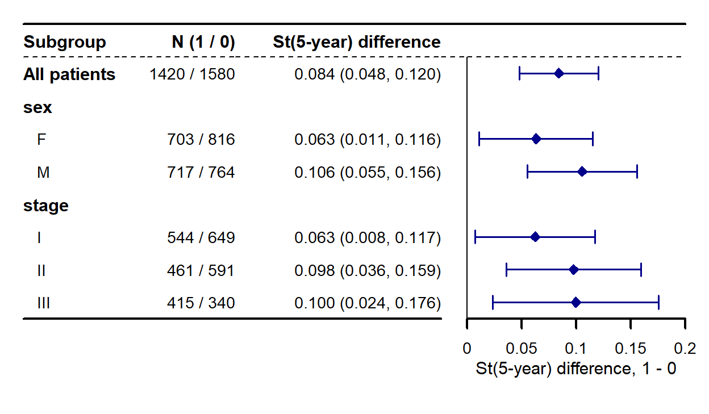
亚组可以事后再定。下面用年龄切出一个 age_65，它不在森林协变量里， 函数会提示：只有当它是协变量的函数（这里正是 age 的函数）或不是混杂时， 亚组估计才成立；否则应当在 get_hte(sub_var = ) 里加进森林。 同时改用事件风险比，并打开两列 P 值：
res$data$age_65 <- factor(ifelse(res$data$age >= 65, "65+", "<65"),
levels = c("<65", "65+"))
p_sub <- plt_hte_sub(res, sub_var = c("sex", "age_65"), measure = "ratio",
show_pvalue = TRUE, show_pinter = TRUE)
#> ℹ age_65 is not a forest covariate: the subgroup estimates hold for a function
#> of the covariates or a variable that is no confounder; otherwise add it with
#> get_hte(sub_var = ).
p_sub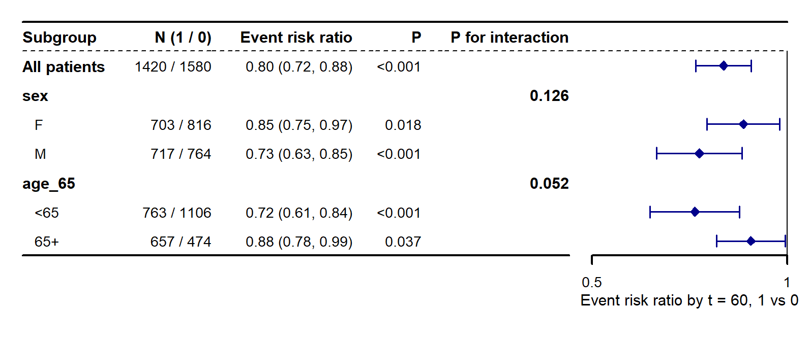
图上的数值挂在 attr(p, "subgroup")，格式同 $subgroup：
attr(p_sub, "subgroup")[, c("sub_var", "level", "estimate", "conf.low",
"conf.high", "p.value", "p_inter")]
#> # A tibble: 4 × 7
#> sub_var level estimate conf.low conf.high p.value p_inter
#> <chr> <chr> <dbl> <dbl> <dbl> <dbl> <dbl>
#> 1 sex F 0.855 0.751 0.973 0.0179 0.126
#> 2 sex M 0.731 0.628 0.852 0.0000555 0.126
#> 3 age_65 <65 0.720 0.614 0.844 0.0000507 0.0525
#> 4 age_65 65+ 0.878 0.777 0.992 0.0368 0.0525生存概率之差的列名写作 St(<time / 12>-year)，因为 time 按 RegR 的惯例以月计； "ratio" / "OR" 画在对数轴上。
替换行
effect 用来把某些行换成外部数值（例如已发表研究的估计），写法与 UtilsR::stat_ci_parse() 能读的区间字符串一致：
plt_hte_sub(res, sub_var = "sex",
effect = list(sex = c(M = "0.15 (0.05, 0.25)"),
"All patients" = "conf_0.9"))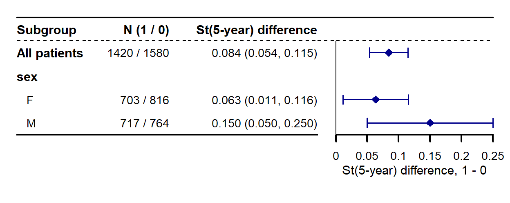
| 写法 | 效果 |
|---|---|
"0.15 (0.05, 0.25)" |
区间：估计值和区间照写，SE 与 P 由区间反推 |
"0.05" 或数值 0.05 |
只换点估计，保留该行的 SE，重算区间与 P |
"conf_0.9" |
估计、SE、P 不变，只把该行区间改成 90% |
图上不标记哪些行被替换过；p_inter 与 cate_mean 保留森林的原值， 因为 Wald 检验无法从一行替换值重做。
参数
| 参数 | 默认 | 说明 |
|---|---|---|
sub_var |
NULL |
分类列，按给定顺序画；NULL 取森林里的全部分类协变量（按 adj_var 顺序） |
measure |
"diff" |
"diff" / "ratio" / "OR" 三选一 |
conf_level |
0.95 |
区间水平，不跟随 get_hte() 的设置 |
effect |
NULL |
替换行，见上 |
overall |
TRUE |
顶部加 “All patients” 行 |
show_n |
TRUE |
显示各臂人数（治疗组在前） |
show_pvalue / show_pinter |
FALSE |
每行 P 值 / 每个变量的交互 P 值 |
label_column_list |
NULL |
标签列的显示名，如 c(F = "Female", age_65 = "Age (years)") |
xlim、ticks_at |
NULL |
坐标范围（相对尺度须为正）与刻度 |
fixed_size |
TRUE |
按文字需要钉死尺寸（行高 0.3 英寸）；一个数值钉死总宽度；FALSE 铺满设备或 patchwork 的格子 |
title、save |
NULL、list() |
标题；PDF 输出，缺省宽高取 attr(p, "plot_size") |
某一臂少于 2 人（生存结局还包括某一臂无人随访超过 time）的水平没有估计， 画成短横线并给出警告。返回值是 forestplot 画面经 ggplotify::as.ggplot() 包装的 ggplot，可以用 patchwork 拼图，但它是”表格的图片”：再加主题或标度不会改变它的样式。
plt_hte_cate()：逐人 CATE 的分布
仿 StratifiedMedicine::plot_ple()：瀑布图把患者按 CATE 排序、每人一根柱； 密度图画各水平的 CATE 分布。黑色虚线是总体 ATE，彩色虚线是各亚组的 双稳健 ATE（即 plt_hte_sub() 画的那些点）。
plt_hte_cate(res, sub_var = "sex", show_ci = TRUE)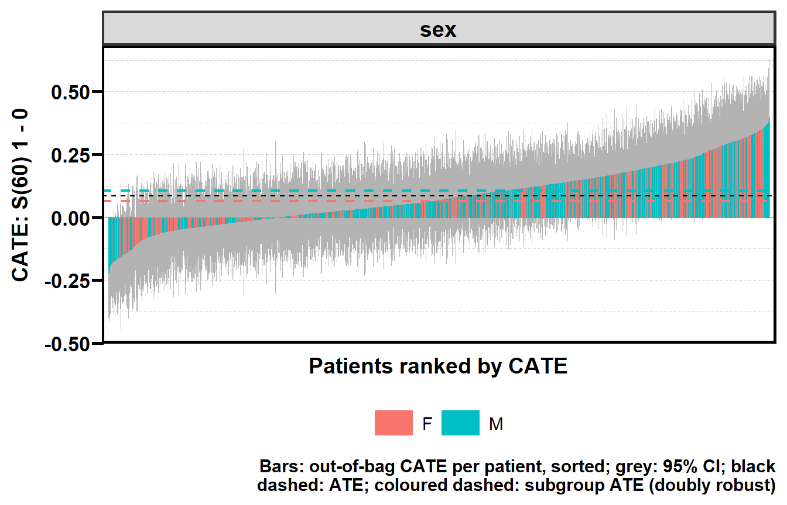
plt_hte_cate(res, sub_var = c("sex", "stage"), type = "density")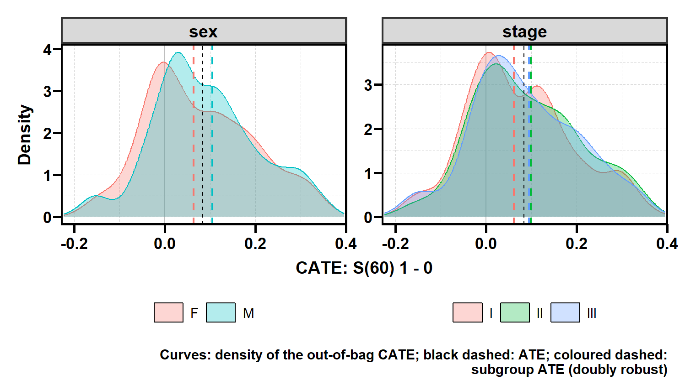
柱和曲线都是森林的袋外估计，只描述、不检验：它们被压向总体均值， 离散程度里又混着估计噪声。本例真实 CATE 的标准差是 0.143， 森林 CATE 的标准差是 0.118。 要看亚组差异是否可靠，看 plt_hte_sub() 的区间和 p_inter。
| 参数 | 默认 | 说明 |
|---|---|---|
sub_var |
NULL |
NULL 为全体患者一个面板；分类列向量时每列一个面板、按水平着色 |
type |
"waterfall" |
"waterfall" 或 "density" |
show_ci |
FALSE |
瀑布图叠加 grf 逐人 CATE 的逐点区间（需要 ci.group.size ≥ 2，即 grf 默认） |
conf_level |
0.95 |
show_ci 的置信水平 |
overall |
TRUE |
画总体 ATE 虚线 |
title、save |
NULL、list() |
标题；PDF 输出 |
plt_hte_rate()：排序规则能否挑出获益者
前面几个函数问”效应随什么变”，plt_hte_rate() 问的是一个更接近决策的问题： 如果按某个规则给患者排优先级，排在前面的人获益是否真的更多？ 它用 grf 的 rank-weighted average treatment effect（RATE）检验，并画两条曲线：
- TOC(q)：排在前 q 比例的患者的平均效应减去全体平均效应，面积是 AUTOC， 加权偏重排序顶端，适合发现”少数人获益很大”；
- Qini(q) = q × TOC(q)：治疗前 q 比例的人比随机治疗同样比例的人多得的获益， 面积是 QINI，各比例同等加权，适合发现”效应逐渐变化”。
默认规则是森林 CATE。它是从结局里学出来的，拿学它的人来评估会高估， 所以函数随机切一半患者重拟合森林来排序、用另一半重拟合的森林来评估：
p_rate <- plt_hte_rate(res)
p_rate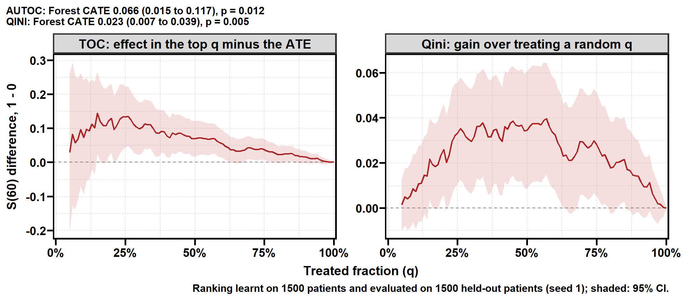
attr(p_rate, "rate")
#> # A tibble: 2 × 8
#> rule target estimate std.error conf.low conf.high p.value n
#> <chr> <chr> <dbl> <dbl> <dbl> <dbl> <dbl> <int>
#> 1 cate AUTOC 0.0673 0.0254 0.0176 0.117 0.00800 1500
#> 2 cate QINI 0.0247 0.00806 0.00891 0.0405 0.00217 1500规则也可以是一个事先给定的分数（生物标志物、已发表的风险评分）。 它不是从结局学来的，直接用已存森林的双稳健得分在全部患者上评估，不切分。 两个规则会一起画并检验差值；含 "cate" 时两者都在留出的一半上评估。 type = "gates" 把排序切成 5 组，画每组内的双稳健效应（GATES）：
p_gates <- plt_hte_rate(res, priority = c("cate", "marker"), type = "gates")
p_gates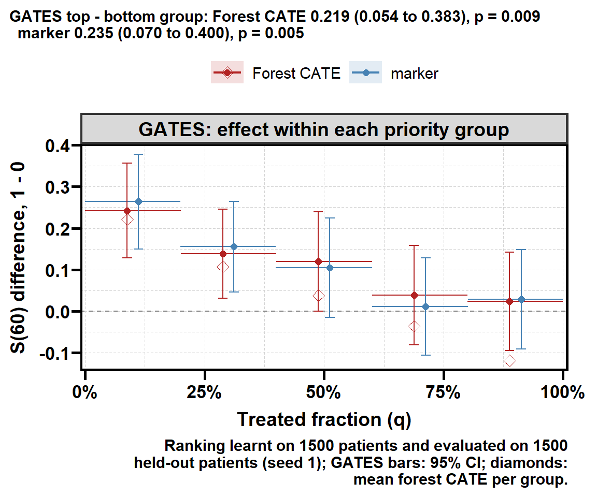
attr(p_gates, "gates")[, c("rule", "group", "n", "estimate", "conf.low",
"conf.high", "cate_mean")]
#> # A tibble: 12 × 7
#> rule group n estimate conf.low conf.high cate_mean
#> <chr> <chr> <int> <dbl> <dbl> <dbl> <dbl>
#> 1 cate 1 300 0.225 0.110 0.340 0.223
#> 2 cate 2 300 0.167 0.0582 0.275 0.108
#> 3 cate 3 300 0.130 0.0134 0.246 0.0372
#> 4 cate 4 300 0.0533 -0.0644 0.171 -0.0386
#> 5 cate 5 300 -0.00645 -0.125 0.113 -0.117
#> 6 cate 1 - 5 600 0.231 0.0657 0.397 0.339
#> 7 marker 1 299 0.260 0.146 0.373 NA
#> 8 marker 2 300 0.165 0.0577 0.273 NA
#> 9 marker 3 302 0.105 -0.0147 0.225 NA
#> 10 marker 4 300 0.0116 -0.105 0.128 NA
#> 11 marker 5 299 0.0270 -0.0920 0.146 NA
#> 12 marker 1 - 5 598 0.232 0.0682 0.397 NA一个有靶向能力的规则，GATES 从左到右应当递减；副标题检验最高组减最低组（“1 - 5” 行）。 对 "cate" 规则，菱形是每组的平均森林 CATE：若菱形比点估计更集中， 说明森林把效应压向了均值。
读曲线
- 不比随机好的规则，两条曲线都贴着 0。曲线从 q = 5% 开始画， 更小的顶端只由极少数患者支撑；AUTOC 和 QINI 仍用全部排序计算。
- RATE 检验的是”这个规则有没有靶向能力”。获益是否值得据此行动， 要看 Qini 曲线的大小，是临床判断。
- 以
"cate"为规则时，结果依赖随机切分；seed固定它（默认沿用森林的种子）， 函数结束后会恢复会话原有的随机数流。
参数
| 参数 | 默认 | 说明 |
|---|---|---|
priority |
"cate" |
一到两个规则："cate"，或 x$data 中的数值 / 逻辑列（值越大越优先；想让小值优先就加一列取负） |
type |
c("toc", "qini") |
可加 "gates" |
smooth |
0 |
0 不平滑；0.05–1 为显示用的 LOESS 跨度，约 0.1 轻微、0.3 较强。AUTOC、QINI 与 attr(p, "rate") 不变 |
gates_args |
list(n_groups = 5) |
GATES 的组数；并列值同组，所以逻辑型规则只有两组 |
conf_level |
0.95 |
带与区间的置信水平 |
train_frac |
0.5 |
"cate" 规则中用来学排序的比例 |
max_n |
10000 |
"cate" 规则最多切分的患者数；超过时随机抽 max_n 例、两片森林各 500 棵树。稀有事件时抽样会丢掉大部分事件，改用 Inf |
seed |
NULL |
抽样、切分、重拟合与 bootstrap 标准误的种子；NULL 取森林的种子 |
title、save |
NULL、list() |
标题；PDF 输出 |
拼图与保存
全部返回 ggplot，可以直接用 patchwork 组合。plt_hte_sub() 默认钉死尺寸， 要按比例分配 patchwork 的格子时改用 fixed_size = FALSE：
library(patchwork)
plt_hte_sub(res, sub_var = "sex", fixed_size = FALSE) /
plt_hte_cate(res, sub_var = "sex", type = "density") +
plot_layout(heights = c(1, 2))保存走统一的 save 参数（本页不执行，以免渲染时往站点目录写文件）：
plt_hte_dep(res, save = list(filename = "hte_dep.pdf"))
plt_hte_sub(res, save = list(filename = "hte_sub.pdf", width = 7))只给文件名时，宽高取图自带的 attr(p, "plot_size")。save 需要装有 RegR。
读结果的七条规矩
- 亚组效应看
estimate（双稳健），不看cate_mean。 森林估计被压向总体均值，cate_mean只描述、不带区间。 importance是分裂频率，不是检验。 本例纯噪声排第二；判断修饰看p_het。p_het/p_inter未经多重校正。 多变量筛选先定检验族，再做 BH 之类的校正。- 不显著 ≠ 没有修饰。 本例写进 DGP 的
sex没有达到显著； 生存结局下二分类修饰变量的检验效能有限。 - 效应修饰依赖尺度。
stage不改变风险比，却在生存概率之差上是真修饰变量；"diff"与"ratio"的亚组结论可以不同。 - 生存结局的
time定义估计量。 两臂都要有人随访超过time； 换时间点就重跑get_hte()。 - 校准检验的 differential 系数为负，读作未检出异质性，不要取绝对值。
参考文献
- Wager S, Athey S (2018). Estimation and inference of heterogeneous treatment effects using random forests. Journal of the American Statistical Association 113(523):1228–1242.
- Athey S, Tibshirani J, Wager S (2019). Generalized random forests. The Annals of Statistics 47(2):1148–1178.
- Cui Y, Kosorok MR, Sverdrup E, Wager S, Zhu R (2023). Estimating heterogeneous treatment effects with right-censored data via causal survival forests. Journal of the Royal Statistical Society Series B 85(2):179–211.
- Yadlowsky S, Fleming S, Shah N, Brunskill E, Wager S (2025). Evaluating treatment prioritization rules via rank-weighted average treatment effects. Journal of the American Statistical Association 120(549).
- Chernozhukov V, Demirer M, Duflo E, Fernández-Val I (2025). Fisher-Schultz lecture: generic machine learning inference on heterogeneous treatment effects in randomized experiments, with an application to immunization in India. Econometrica 93(4):1121–1164.
各函数的完整说明见包内帮助页：?get_hte、?plt_hte_dep、?plt_hte_sub、 ?plt_hte_cate、?plt_hte_rate。grf 本身的用法见本站 grf 包官方教程中译。